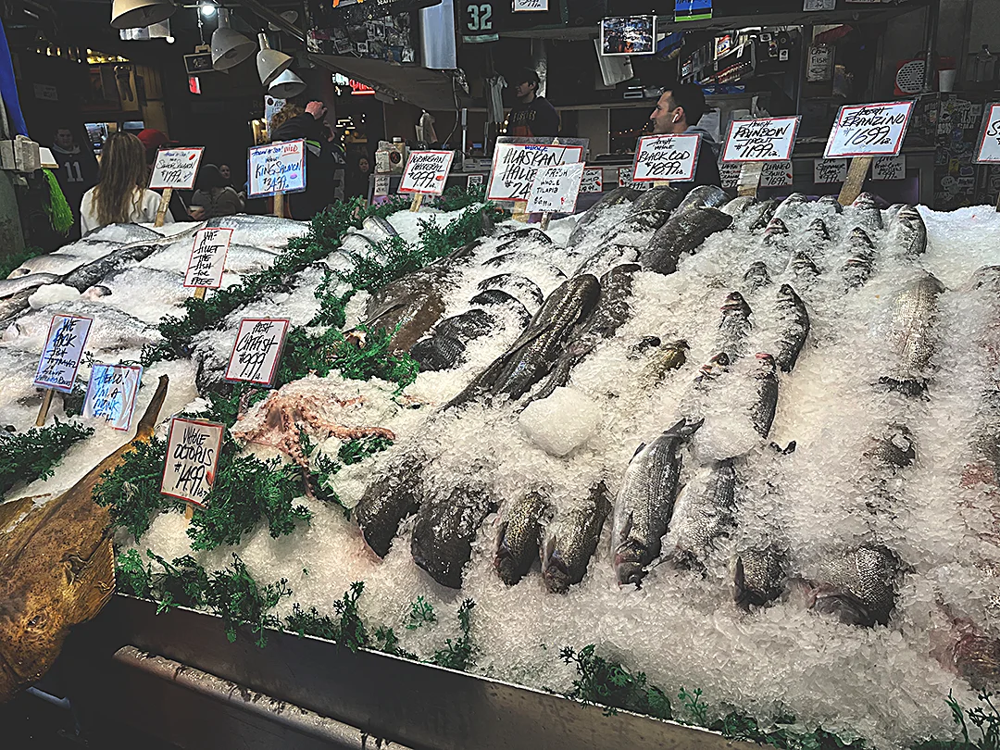
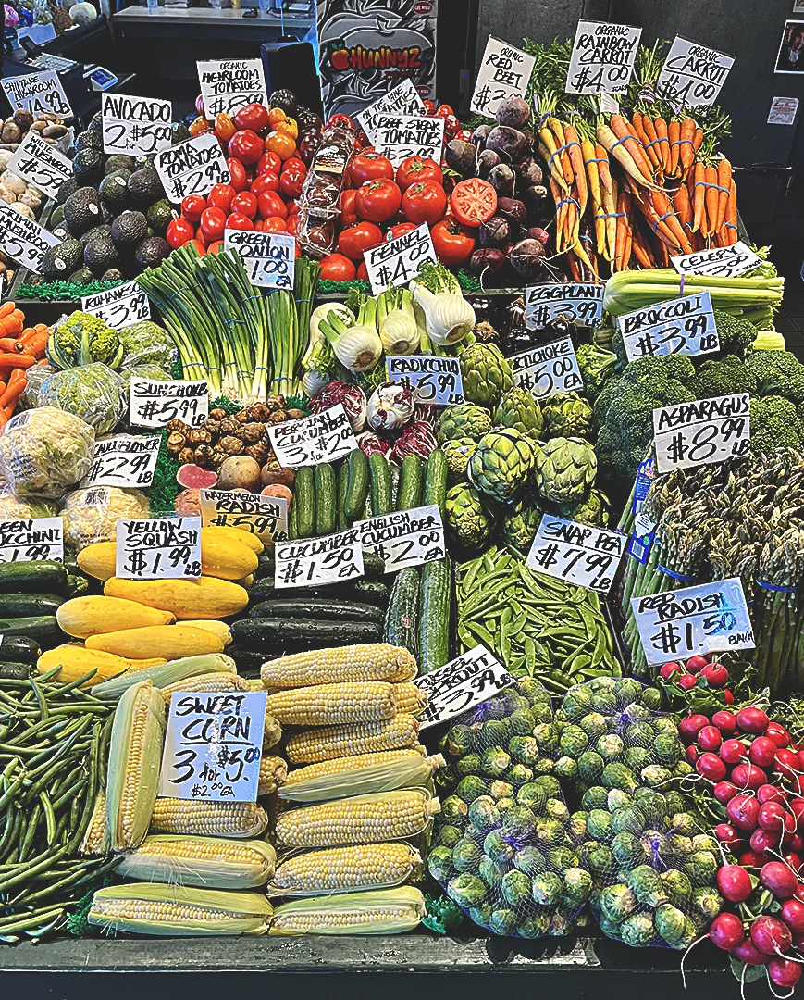
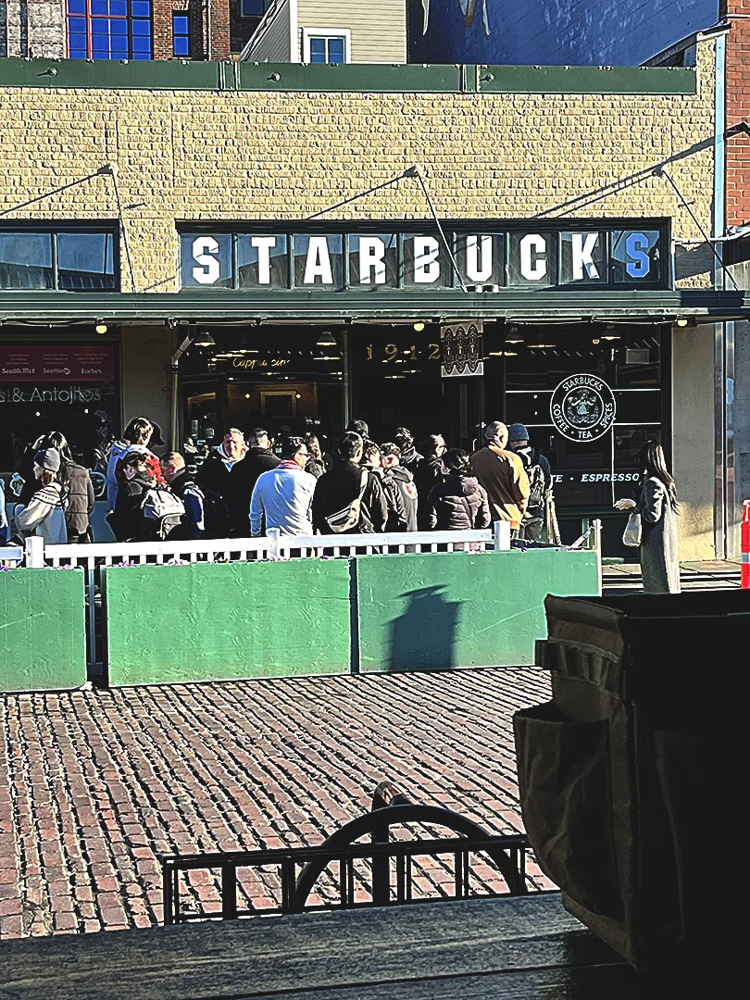
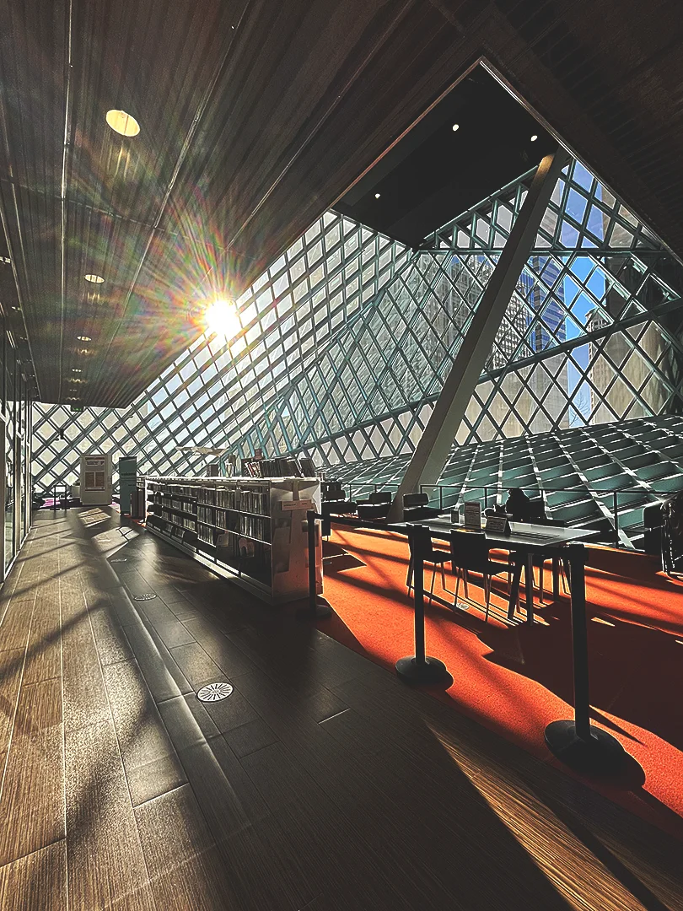
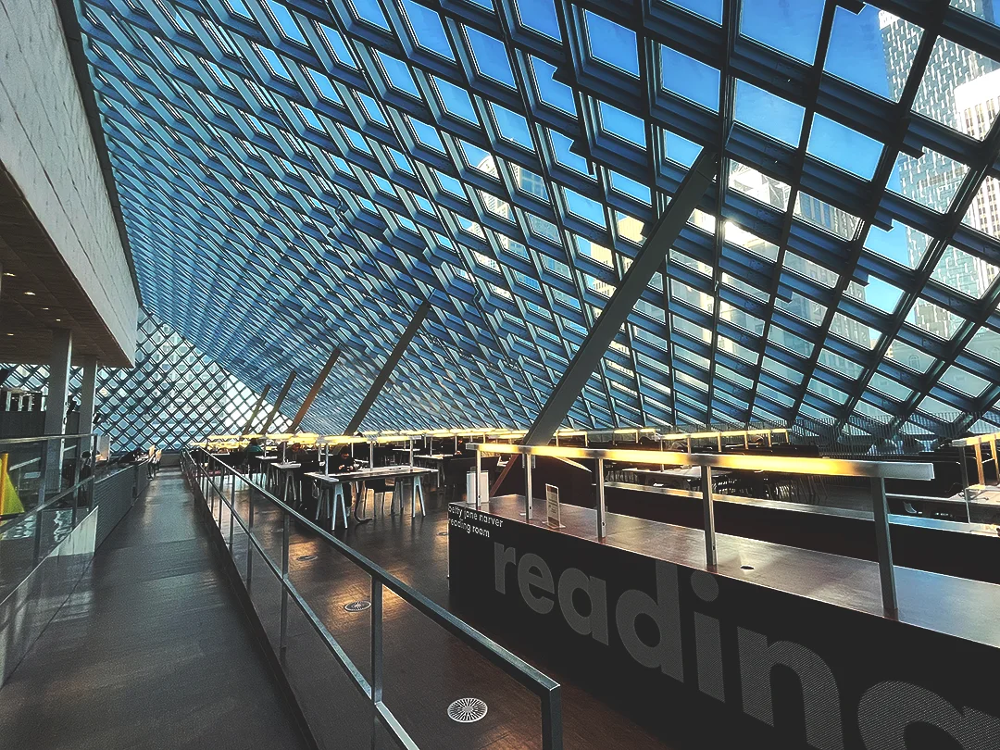
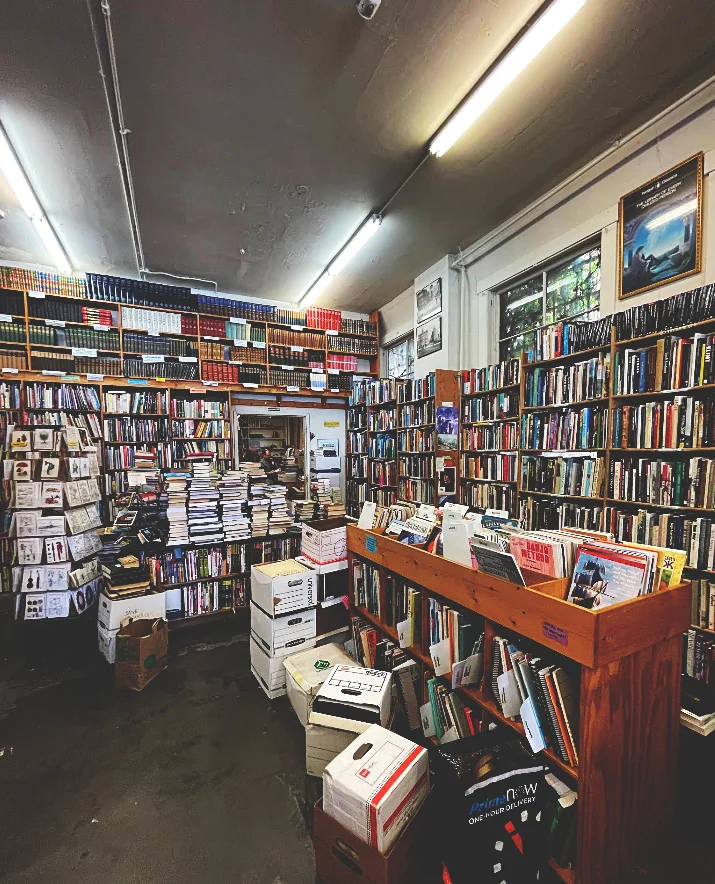
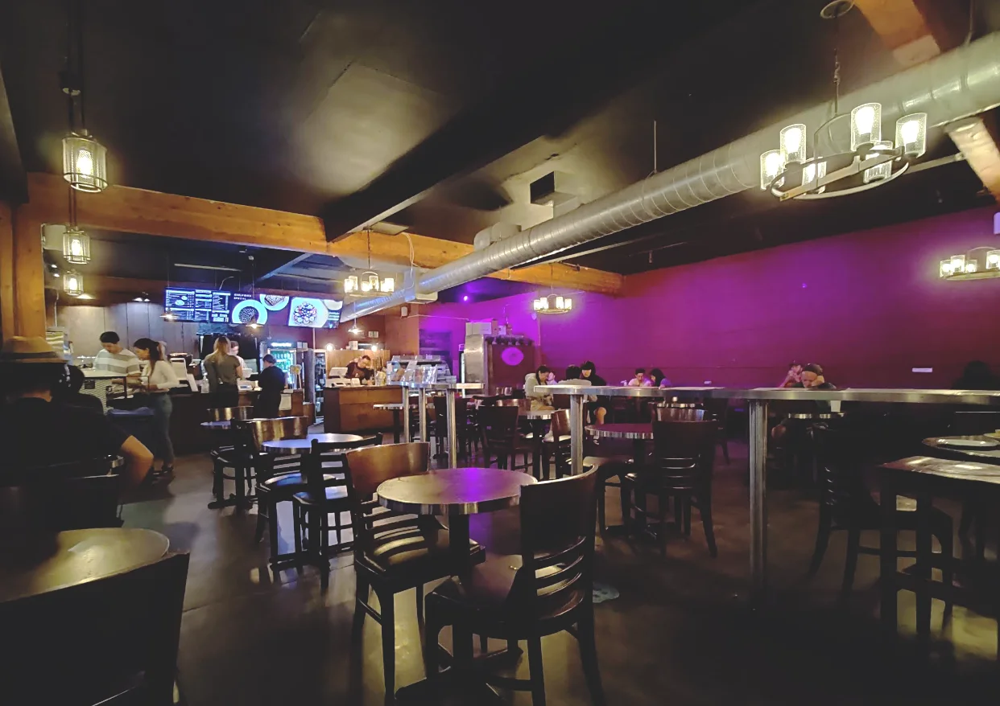

Day 4 - The Market, Library, University District, Sloop Tavern, & More
The Pike's Place Market

I woke up at around 10, the hostel staff clearing up breakfast items. I had bought my yogurt and berries at the co-op the evening before, so I pulled those out and had a nice meal, including crunchy peanut butter toast and warm coffee. Rhett got up soon after, and we discussed what our agenda for the day was. It was Saturday, meaning two things were happening: the farmer's market and the football game against the San Francisco 49ers. Already, looking out the window, we could spot figures clad in red shirts and seeming a little chilled. It was nearly eleven when we finally went out to the streets.
We did an initial walk-through, generally following the flow of the crowd. Soon, we found ourselves out on a balcony overlooking the Puget Sound with flocks of seagulls nearby, squaking with excitement over the sunny and mild weather. We also found the famous gum wall, which I thought was really gross to stand near, but Rhett had no problem making silly faces and standing less than a foot away.

Continuing on, we found lots of fresh seafood, cute shops, bakeries, and bookstores. We were offered tasty free samples of apples and oranges at a fruit stand. Walking around in the soft light of Lamplight Books felt cozy and comfortable. I was tempted to add a book about Billie Eilish to my collection while Rhett was engrossed in a paperback on spiritualism. Once we had enough of the book store, we journeyed through the market on the lookout for additional interesting spots. Rhett hadn't eaten anything, so he stopped for some clam chowder (which was not surprisingly possibly the best he had ever had) while I made my way over to Three Girls Bakery, interested in sinking my sweet tooth in a Russian pastry that had caught my eye earlier.

Rhett finished his soup and went to go find a bathroom. I wiped the powdered sugar from the pastry onto my pants, wandering through an unexplored alley, looking for more interesting shops. I passed the originial Starbucks. The Pikes Place roast bags on shelves everywhere is homage to that store! I moved on to Beecher's, where they made cheese. The storefront looked busy, but I hustled past the crowd and made my way toward the display cases, where they had laid out many variations of cheese. I wondered aloud if I could try some, and the lady behind the counter must have heard me, saying, "Which one would you like to try?" They ALL looked incredible, so as politely as I could, I asked for a platter of samples. Of course they obliged- that was what they were there for. Let me explain to you that this cheese is other-worldly. I have NEVER tasted cheese that good in my life. I texted Rhett to come try some. He was interested in the smoked gouda and the bleu cheese. He agreed- it was pretty incredible and instantly made you want additional samples!
The Seattle Public Library

Feeling fulfilled by our late morning stroll through the market, Rhett suggested we go to the library. I agreed. We set out towards the library straight from the market. We went north along the 1st Ave to turn east onto Madison. It wasn't too far of a journey!

We arrived and i was immediately stunned by the architecture- beautiful glass walls steeping at various angles. It actually reminded me strangely of the Louvre pyramid in France. Inside, there was a pleasant atmosphere- a quiet focus from the studious folks pouring over their books and laptops. There were 10 levels to explore. Rhett was looking for books on neuro-linguistic programming, and I for books on music. It was quite fun exploring the library each in our own way. Eventually, we met on the top floor, the quietest of them all, where every foot fall and swishing of pant legs could be known to all. It felt so serence. Whispering was the only option. Rhett told me he was ready to go, and so we decided our next destination was going to be the University District.
University District
We journeyed back to the garage to grab our car (up and down some very steep hills). We headed North along the expressway and over the split between Lake Union and Portage Bay. Rhett guided us to the University and I found us a place to park. Immediately, we saw evidence of college activity- there were many students walking among the streets, visiting shops and laughing with their friends. It seemed a great place to go to school.
Our first stop was a thrift store- Red Light Vintage. It was bustling with a lot of girls. We found the cool tshirts (organized by color), looked through about two racks, and got out. There seemed to be a lot of cosplay accessories and plenty of women's clothing, so we didn't feel we needed to stay very long.
We stopped briefly at Inner Visions, which had some both contemporary and new vinyl. They seemed to have more posters than music, though, and struck us as a bit expensive. The place wasn't too large, so we did a walk through and went out.
We headed further south along the street until we found an incredible book store. Magus Books had a plethora of reading material, covering pretty much every genre you could think of. Rhett was still looking for his neuro-linguistic programming topic. I was entranced walking around, finding how-to books (like how to fix your bike) amid fiction and nonfiction alike. There were endless stacks of books, papers, and comics waiting to get shelved. One photo does not do it justice, but I'm not sure how else to explain just how big their store was.

We were both fairly hungry after going window-shopping, and there was a bursting cafe right across the street. Cafe on the Ave was a cozy space, decorated and full of students. The workers were very friendly. I was craving a cup of fruit and a smoothie so that is what I indulged in. It was a little expensive, sure, but I figured since we didn't buy much at our previous stops, I was okay with getting a little snack. Rhett asked what else I wanted to do in this part of town. I thoughtfully suggested we go to a music store, so we made a brief stop at Ted Brown Music to pick up some guitar picks for Rhett. The gentleman there had some choice words about going to the bars downtown, saying something funny along the lines of "I don't really get down that way", so we left in good spirits.

Sloop Tavern
Saying goodbye to the shopkeeper, we thought it would be fun to go to a bar where the game was playing. Rhett looked on Google and found an interesting spot in the Ballard / Sunset Hill area. We drove over to find limited parking (granted the game was already underway) and squeezed the Corolla between a few cars in a martial arts lot down the street.
The place was PACKED. We walked in and went to the bar. We politely asked if we could get some beer and food and were met with, "If you can fucking find a place to sit." Rhett seemed interested in the $4 Rainier beer so I asked for the same. We made our way over to the pool tables in the center of the room for a few minutes while we waited for a spot to clear. Eventually, a group in the corner booth mostly filed out, and we were allowed to sit with a couple who were obviously enjoying themselves. Before we went over, I ordered $8 of wings and celery.
Rhett and I talked about our time so far and the fun places we had been already. I was very much looking forward to the rest of our trip. The wings and celery arrived, and so we got our fingers dirty while we watched Seattle dominate San Fran. They had pulled ahead to a 6-28 when we left the excited establishment.
Well Into the Evening...
We headed back to the car and sped toward the city. We found a parking garage and noticed we both had to empty our bowels. We raced towards the hostel, and then we realized Target might have a bathroom or two (plus we both wanted to get snacks), so we entered and found somebody to ask- should have known better! They didn't have any public restrooms. so we hustled a little further to the hostel. We bumped into Marisa there, back from the day's troll hunting. She handed us $10 and said, "Water," as we headed back to Target.
Rhett was looking for some good drinks and healthy snacks (hummus and pita), whereas I wasn't concerned so much. I found the water and headed straight to the bingeable snacks- pretzels, crackers, chips, and desserts. I snagged some Thin Mint Oreos, Ritz Cheese Bits, Gardettos, and peanuts.
We checked out, headed back to the hostel, gave back Marisa her water and change, and headed to the lounge. Marisa thanked us by holding up an eyebrow and a box of six prerolls. Rhett laughed. We "got to work" and exchanged stories, laughter, and time well into the evening. At one point, Rhett got asked to do an interview with a red-haired kid named Max, who claimed to be a journalist and who had a blog. I needed some fresh air, so I went to the waterfront with Marissa while Rhett was laughing his ass off.
When we got back, Marisa turned in while I went to go hang out with Rhett and David. They were trading patterns on the guitar. David clearly understood how to play and was very inspiring. We were up until about 1:30, when I just couldn't keep my eyes open any longer, so I, too, shuffled off to bed.